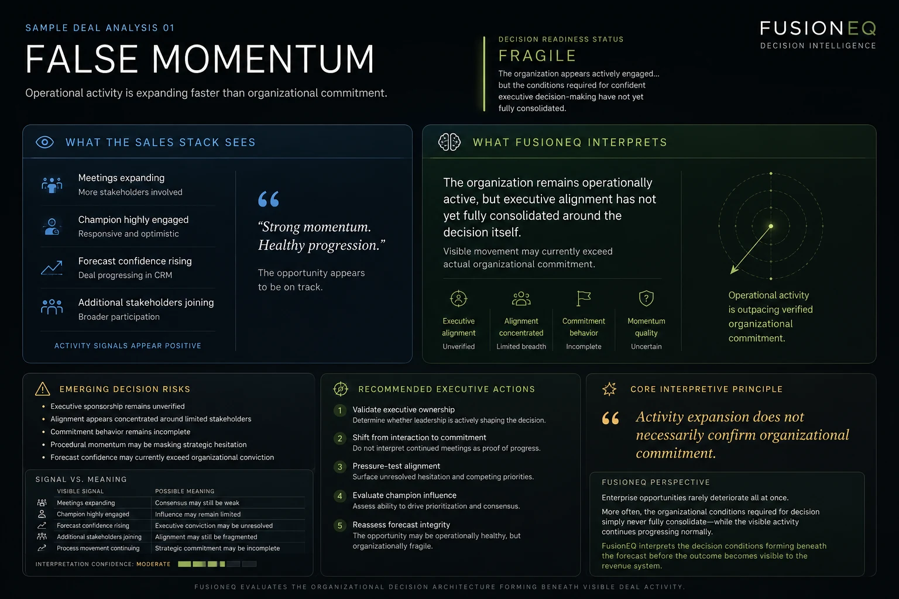

- Visible Signal
- Meetings, next steps, and positive engagement continue.
- Hidden Pattern
- The seller may be creating motion the buyer organization is not yet carrying.
- Better Move
- Ask who is moving this forward internally without seller prompting.
What Keeps Repeating
The patterns are familiar once someone names them.
Teams already feel these moments: the deal is active, the updates sound fine, and still the decision is not coming together.
FusionEQ gives those moments language so leaders can inspect them earlier.
The Familiar Miss
False Momentum feels obvious once you see it.
The deal looks alive because activity continues. The real question is whether the buyer is carrying the decision without seller force.

What The Pattern Reveals
Normal activity can hide the real decision problem.
The pattern matters because it tells the team what the current story does not prove.
Support Without Influence
The contact is responsive, but has not proven they can move the organization.
What has this person done internally that proves influence?Agreement Without Alignment
People sound supportive, but priorities, authority, and next action are not aligned.
Who is committed to turning agreement into a decision?Confidence Without Evidence
The forecast looks stable while urgency, authority, or ownership remain untested.
What evidence proves readiness rather than confidence?Executive Hesitation
The team is engaged, but senior conviction has not become visible enough to create movement.
What would prove executive ownership before the next forecast call?What To Do About It
Once the pattern is named, the next move gets specific.
The work becomes practical: what to ask, who to validate, what evidence to look for, and what to change before the deal drifts further.
The Diagnostic Briefing applies that read to live work leadership needs to interpret now.